A complete visual guide to the kernel, shells, users, files, processes, IPC, signals, threads, and more — with diagrams and real Linux commands for every concept.
The term operating system has two meanings: the entire software package (kernel + tools + GUI), or more narrowly, the kernel — the central software that manages and allocates computer resources (CPU, RAM, devices). This book focuses on the kernel.
The kernel simplifies programming by providing a software layer to manage limited resources. The kernel executable lives at /boot/vmlinuz (the z means it's compressed).
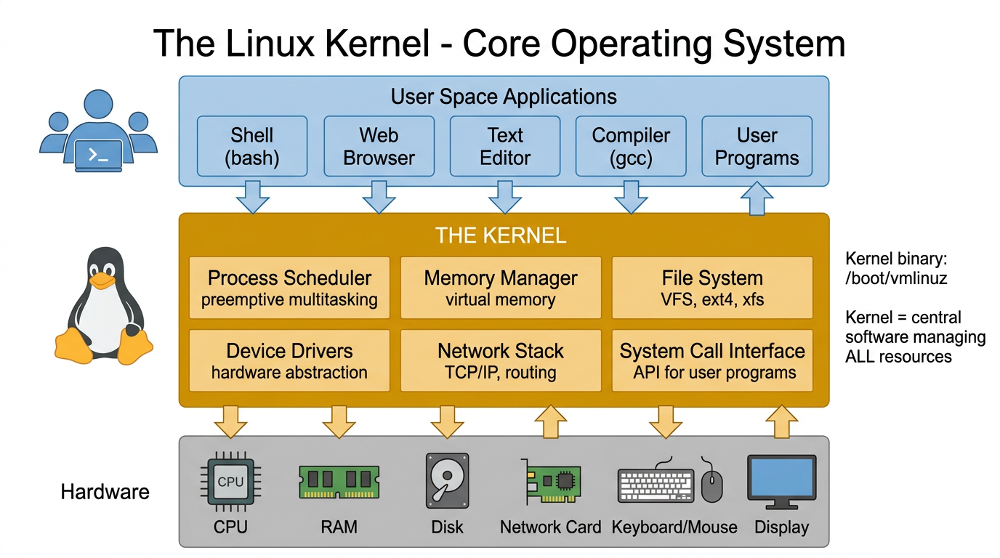
| Task | Description |
|---|---|
| Process Scheduling | Linux is a preemptive multitasking OS. Multiple processes reside in memory; the kernel scheduler decides which gets CPU time and for how long (not the processes themselves). |
| Memory Management | Virtual memory isolates processes from each other and the kernel. Only needed pages stay in RAM; rest goes to swap. More processes can run simultaneously. |
| File System | Provides a hierarchical file system on disk. Create, read, update, delete files and directories. |
| Process Creation/Termination | Loads programs into memory, allocates resources, and frees them when processes finish. |
| Device Access | Provides a standardized interface to all devices (keyboards, disks, network cards), arbitrating access among multiple processes. |
| Networking | Transmits and receives network packets on behalf of user processes, including routing. |
| System Call API | Processes request kernel services via system calls — the kernel entry points. |
Modern CPUs operate in at least two modes. User mode: can only access user-space memory, cannot execute privileged instructions. Kernel mode: can access all memory and execute any instruction (halt, I/O, MMU). The CPU switches modes during system calls, interrupts, and exceptions.
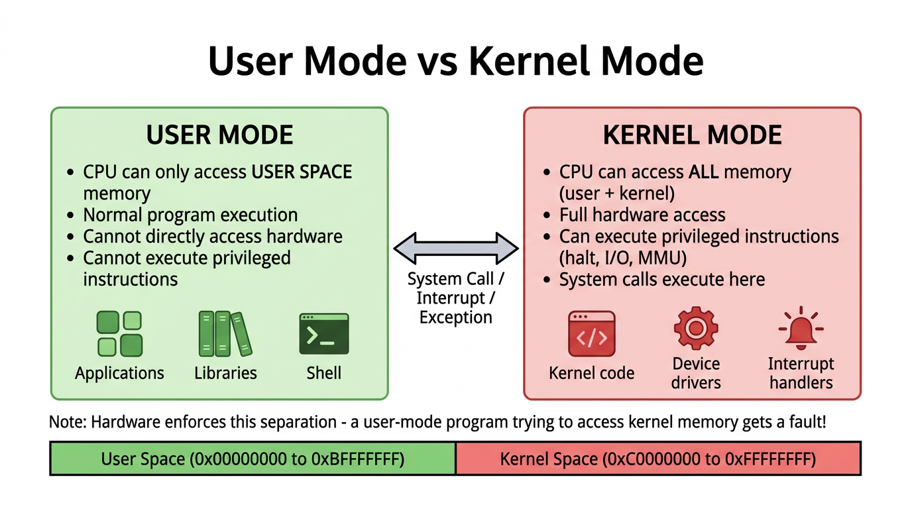
$ uname -r # Kernel version 5.15.0-91-generic $ uname -a # Full system info Linux myhost 5.15.0-91-generic #101-Ubuntu SMP x86_64 GNU/Linux $ cat /proc/version # Detailed kernel version Linux version 5.15.0-91-generic (buildd@lcy02-amd64-060) (gcc ...) $ ls /boot/vmlinuz* # Kernel binary on disk /boot/vmlinuz-5.15.0-91-generic $ lsmod | head -10 # Loaded kernel modules $ dmesg | tail -20 # Kernel ring buffer messages $ sysctl -a | head -10 # Kernel parameters $ cat /proc/sys/kernel/osrelease # Another way to get version
A shell is a user-space program that reads commands and executes programs. Unlike Windows where the command interpreter is part of the kernel, UNIX shells are ordinary user processes. Different users can run different shells simultaneously.
| Shell | Binary | Key Features |
|---|---|---|
| Bourne shell | sh | The original. I/O redirection, pipelines, variables, functions, background execution. Written by Steve Bourne. |
| C shell | csh | C-like syntax. Added command history, line editing, job control, aliases. By Bill Joy (BSD). Not backward-compatible with sh. |
| Korn shell | ksh | Backward-compatible with sh. Added C shell interactive features. By David Korn (AT&T). |
| Bash | bash | GNU reimplementation of Bourne shell. Most widely used on Linux. Combines sh compatibility with csh/ksh interactive features. POSIX conformant. |
| Zsh | zsh | Extended Bourne shell with many improvements. Default on macOS. Powerful completion, theming. |
Shells serve two purposes: interactive use (typing commands) and script interpretation (executing shell scripts — text files containing commands).
$ echo $SHELL # Current user's login shell /bin/zsh $ cat /etc/shells # All available shells /bin/bash /bin/csh /bin/dash /bin/ksh /bin/sh /bin/tcsh /bin/zsh $ echo $0 # Currently running shell zsh $ bash --version # Bash version $ ps -p $$ # Process info for current shell $ chsh -l # List available shells (some systems) $ chsh -s /bin/bash # Change login shell
Every user has a unique login name (username) and numeric user ID (UID). Users can belong to one or more groups, each with a group ID (GID). The superuser (root, UID 0) bypasses all permission checks.
| File | Contains |
|---|---|
/etc/passwd | User accounts: username, UID, GID, home directory, login shell. (Password field usually x — actual hash in shadow file.) |
/etc/shadow | Encrypted passwords. Readable only by root. |
/etc/group | Groups: group name, GID, comma-separated list of member usernames. |
The superuser (UID 0, root) can do anything. Since kernel 2.2, Linux divides superuser privileges into capabilities (e.g., CAP_KILL, CAP_NET_ADMIN) so a process can have a subset of root powers.
$ whoami # Current username kkanakka $ id # UID, GID, and all groups uid=8785(kkanakka) gid=20(staff) groups=20(staff),80(admin),... $ id -u # Just the UID $ id -g # Just the primary GID $ groups # Groups current user belongs to $ cat /etc/passwd | head -5 # User database root:x:0:0:root:/root:/bin/bash daemon:x:1:1:daemon:/usr/sbin:/usr/sbin/nologin bin:x:2:2:bin:/bin:/usr/sbin/nologin $ cat /etc/group | head -5 # Group database root:x:0: daemon:x:1: bin:x:2: $ getent passwd kkanakka # Look up specific user $ getent group admin # Look up specific group $ last | head -10 # Recent login history $ w # Who is logged in and what they're doing
Linux has a single hierarchical directory structure rooted at /. Unlike Windows, there are no drive letters — all disks are mounted into this one tree.
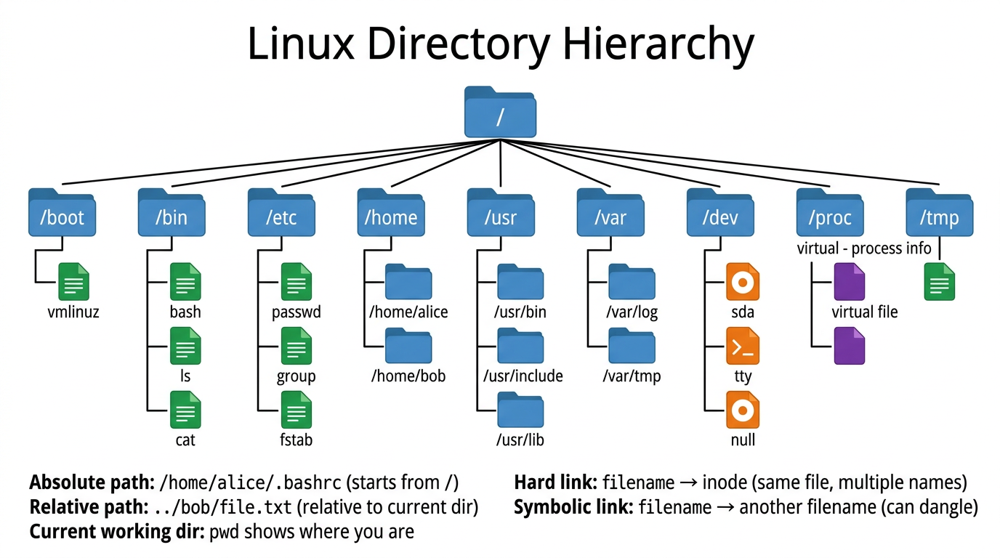
| Type | Symbol | Description |
|---|---|---|
| Regular file | - | Ordinary data files (text, binary, images) |
| Directory | d | Contains filename-to-inode mappings (links) |
| Symbolic link | l | Points to another filename (can dangle if target deleted) |
| Block device | b | Disk drives (/dev/sda) |
| Character device | c | Terminals, serial ports (/dev/tty) |
| Named pipe (FIFO) | p | IPC mechanism with a filesystem name |
| Socket | s | IPC endpoint (/var/run/docker.sock) |
ln file hardlinkln -s file symlinkThree categories: owner (u), group (g), other (o). Three permissions each: read (r=4), write (w=2), execute (x=1).
$ ls -la / # Root directory listing $ pwd # Current working directory $ cd /var/log # Change directory (absolute) $ cd ../tmp # Change directory (relative) # File type identification $ file /bin/ls # Identify file type /bin/ls: ELF 64-bit LSB pie executable, x86-64 $ stat /etc/passwd # Detailed file metadata $ ls -li /etc/passwd # Show inode number # Links $ ln file hardlink # Create hard link $ ln -s file symlink # Create symbolic link $ readlink -f symlink # Resolve symlink to real path $ find / -inum 12345 # Find all hard links to inode # Permissions $ ls -la file.txt # View permissions -rw-r--r-- 1 user group 1024 Apr 5 file.txt $ chmod 755 script.sh # Set permissions (rwxr-xr-x) $ chown user:group file # Change owner and group # Disk usage $ df -h # Filesystem disk space $ du -sh /var/log # Directory size $ mount | column -t # Show mounted filesystems
UNIX's defining I/O feature is universality of I/O: the same system calls (open(), read(), write(), close()) work on ALL file types — regular files, devices, pipes, sockets. The kernel translates these into the appropriate operations.
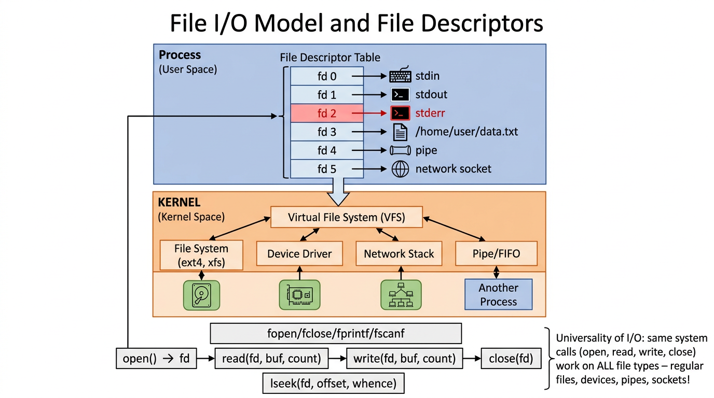
| FD | Name | C stream | Purpose |
|---|---|---|---|
| 0 | stdin | stdin | Standard input (keyboard by default) |
| 1 | stdout | stdout | Standard output (terminal by default) |
| 2 | stderr | stderr | Standard error (terminal by default) |
The stdio library (fopen, fprintf, fgets) is layered on top of system calls (open, write, read), adding buffering for efficiency.
Whether you're writing to a text file, sending data over a network, or piping to another process — your code uses the same calls: open(), read(), write(), close().
C
// Writing to a REGULAR FILE
int fd = open("/home/user/data.txt", O_WRONLY); // fd = 3
write(fd, "hello", 5); // 5 = number of bytes ("hello" = 5 chars)
close(fd);
// Writing to a NETWORK SOCKET
int fd = socket(AF_INET, SOCK_STREAM, 0); // fd = 4
connect(fd, server_addr, ...);
write(fd, "hello", 5); // SAME write() call!
close(fd);
// Writing to a PIPE
int pipefd[2];
pipe(pipefd); // pipefd[0]=read end, pipefd[1]=write end
write(pipefd[1], "hello", 5); // SAME write() call!
close(pipefd[1]);
"hello" = h, e, l, l, o = 5 characters = 5 bytes.write(fd, "hello", 5) → where=fd, what="hello", how many bytes=5.
When you call write(fd, ...), the kernel's Virtual File System (VFS) looks up what type of resource that fd points to and routes the data to the correct subsystem.
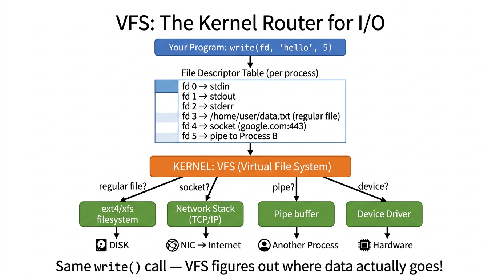
Every time you open() something, the kernel assigns the next available fd number:
C
// Program starts with fd 0, 1, 2 already open (stdin/stdout/stderr)
int fd3 = open("/desktop/kiran.txt", O_WRONLY | O_CREAT); // fd 3
write(fd3, "my notes", 8);
int fd4 = open("/music/song.mp3", O_RDONLY); // fd 4
read(fd4, buffer, 4096);
int fd5 = open("/var/log/app.log", O_WRONLY | O_APPEND); // fd 5
write(fd5, "error occurred\n", 15);
int fd6 = socket(AF_INET, SOCK_STREAM, 0); // fd 6
connect(fd6, db_address, ...);
write(fd6, "SELECT * FROM users", 19); // database = socket!
unlink("/desktop/old_file.txt"); // delete a file — no fd needed, just a syscall
Resulting fd table for this process:
fd 0 → stdin (keyboard) fd 1 → stdout (terminal) fd 2 → stderr (terminal) fd 3 → kiran.txt (regular file) fd 4 → song.mp3 (regular file) fd 5 → app.log (regular file) fd 6 → DB connection (socket)
Each process has its own independent fd table. fd 3 in Process A has nothing to do with fd 3 in Process B.
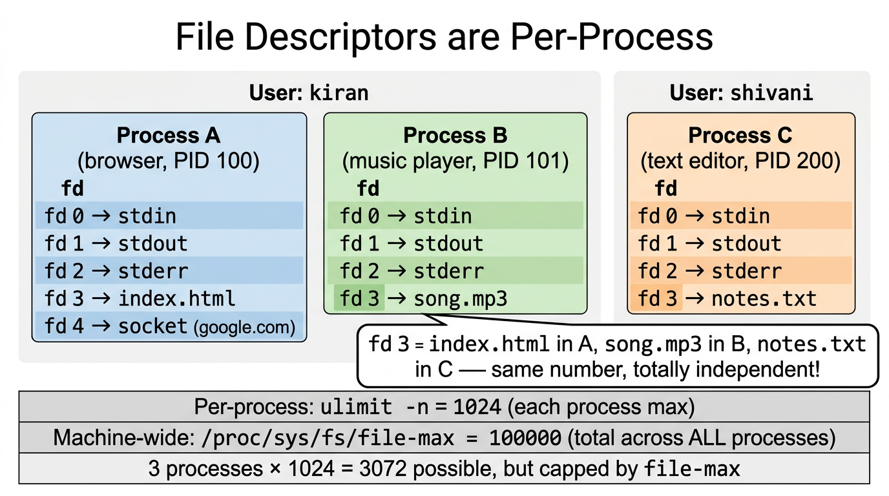
ulimit -n is per process, not per machine.
$ ulimit -n 1024 # each SINGLE process can open max 1024 fds # So if you have 3 processes running: # Process A → can open up to 1024 fds # Process B → can open up to 1024 fds # Process C → can open up to 1024 fds # Total possible = 3 × 1024 = 3072 fds across machine # But the MACHINE-WIDE cap is separate: $ cat /proc/sys/fs/file-max 100000 # total fds ALL processes on the machine can share # Even if each process is allowed 1024, if 100 processes # together hit 100000, no more fds for anyone.
# Increase per-process limit (temporary, current shell only) $ ulimit -n 65535 # Increase per-process limit (permanent) # edit /etc/security/limits.conf: kiran hard nofile 65535 kiran soft nofile 65535 # Increase machine-wide limit $ sudo sysctl -w fs.file-max=200000
ulimit -n to 65535 or higher.
An fd is a temporary handle your process holds. An inode is the permanent identity of a file on disk. Multiple fds (from different processes or even the same process) can point to the same inode.
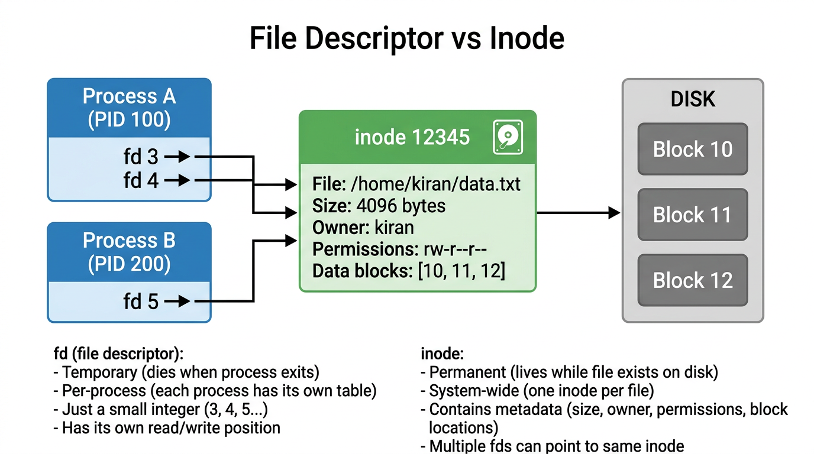
| Property | File Descriptor (fd) | Inode |
|---|---|---|
| Lifetime | Temporary — dies when process exits or calls close() | Permanent — lives while file exists on disk |
| Scope | Per-process (each process has its own table) | System-wide (one inode per file on the filesystem) |
| What is it? | A small integer (3, 4, 5...) | Metadata: size, owner, permissions, disk block locations |
| Relationship | Many fds can point to one inode | One inode per file, multiple hard links share it |
| Read/write position | Each fd has its own independent offset | N/A — inode stores file data, not cursor position |
Example # Same file opened twice in one process — different fds, same inode: fd 3 = open("kiran.txt") → inode 12345, position=0 fd 4 = open("kiran.txt") → inode 12345, position=0 (independent) # Two processes opening the same file: Process A: fd 3 ──┐ ├──→ inode 12345 → /home/kiran/data.txt (on disk) Process B: fd 5 ──┘ # close(fd) tells the kernel "I'm done with this number, reuse it." # So if you close fd 3, the next open() might give you fd 3 again.
/var/run/docker.socksocket(AF_UNIX, ...)10.0.0.2:8080socket(AF_INET, ...)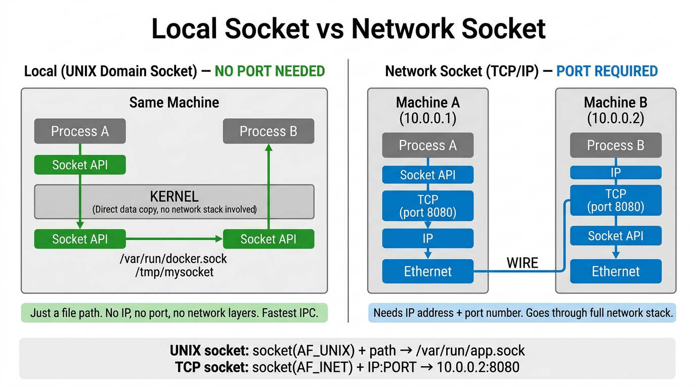
When two programs on different machines communicate via a socket, data passes through all 7 OSI layers. The Socket API is the door your code uses to enter the stack.
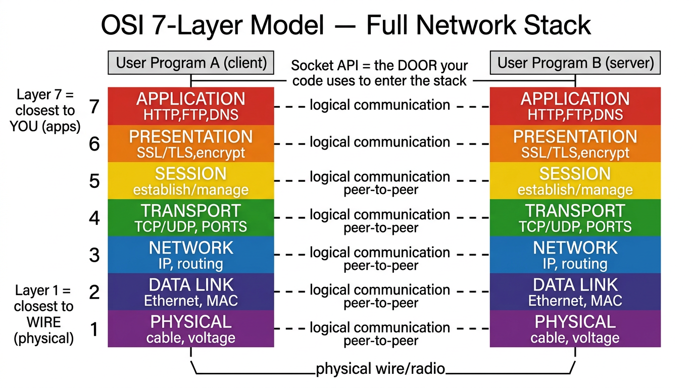
| # | Layer | What It Does | Examples |
|---|---|---|---|
| 7 | Application | Your app's protocol — closest to YOU | HTTP, FTP, DNS, SSH, SMTP |
| 6 | Presentation | Encryption, encoding, compression | SSL/TLS, JPEG, ASCII, gzip |
| 5 | Session | Establish, manage, terminate connections | NetBIOS, RPC, session tokens |
| 4 | Transport | End-to-end delivery, adds port numbers | TCP (reliable), UDP (fast) |
| 3 | Network | Routing, adds IP addresses | IP, ICMP, routing protocols |
| 2 | Data Link | Framing, adds MAC addresses, error check | Ethernet, WiFi, ARP |
| 1 | Physical | Bits on the wire — closest to the WIRE | Cable, fiber, radio, voltage |
Easy to remember: Layer 1 is the floor (physical stuff you can touch). Layer 7 is the ceiling (apps you interact with).
When data goes down the stack on Machine A, each layer wraps it with a header. When it arrives on Machine B and goes up, each layer strips its header.
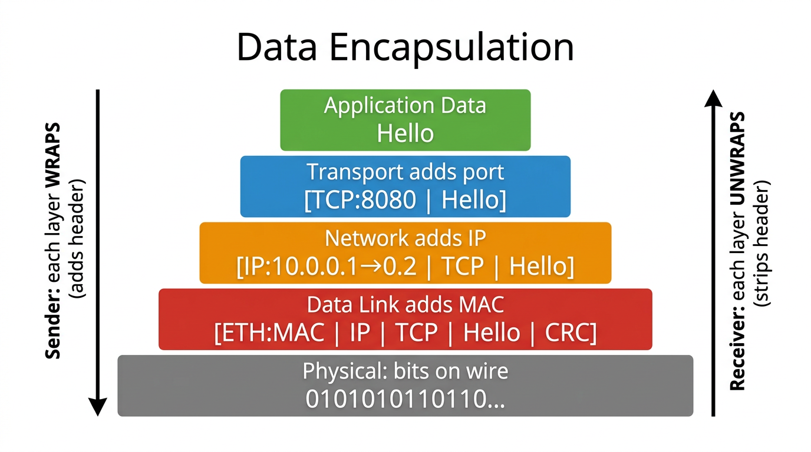
Encapsulation Step by Step
Sender (going DOWN):
App data: [Hello]
Transport adds port: [TCP:8080 | Hello]
Network adds IP: [IP:10.0.0.1→10.0.0.2 | TCP | Hello]
Data Link adds MAC: [ETH:MAC_A→MAC_B | IP | TCP | Hello | CRC]
Physical: 0101010110110...
Receiver (going UP):
Physical: receives bits
Data Link: strips ETH header, checks MAC → [IP | TCP | Hello]
Network: strips IP header, checks dest IP → [TCP | Hello]
Transport: strips TCP header, delivers to port 8080 → [Hello]
Application: receives "Hello"
AF_UNIX) talk through the kernel directly — no TCP, no IP, no Ethernet, no physical layer. That's why local sockets are much faster.
# View open file descriptors of a process $ ls -la /proc/$$/fd # Current shell's open files $ ls -la /dev/fd/ # Symlink to /proc/self/fd # See what files a process has open $ lsof -p $$ # List open files for current shell $ lsof -i :80 # What process uses port 80? $ lsof /var/log/syslog # Who has this file open? # I/O redirection in shell $ command > file.txt # Redirect stdout to file $ command 2> errors.txt # Redirect stderr to file $ command &> both.txt # Redirect both stdout and stderr $ command < input.txt # Redirect stdin from file # Trace system calls (see actual open/read/write) $ strace -e trace=open,read,write cat /etc/hostname open("/etc/hostname", O_RDONLY) = 3 read(3, "myhost\n", 131072) = 7 write(1, "myhost\n", 7) = 7 # FD limit checks $ ulimit -n # Per-process fd limit $ cat /proc/sys/fs/file-max # Machine-wide fd limit $ cat /proc/sys/fs/file-nr # Currently allocated fds $ ls /proc/$$/fd | wc -l # How many fds current process has open # Socket exploration $ ss -xln # UNIX domain sockets (local, no port) $ ss -tuln # TCP/UDP sockets (network, with ports) $ ls -la /var/run/*.sock # Common UNIX socket locations
Programs exist in two forms: source code (human-readable, e.g., C) and binary executables (machine-language). Compilation and linking converts source to binary. Scripts are text files processed by an interpreter (shell, Python).
A filter reads from stdin, transforms the data, and writes to stdout. Filters are the building blocks of UNIX pipelines.
| Filter | Purpose |
|---|---|
cat | Concatenate and display files |
grep | Search for patterns in text |
sort | Sort lines |
wc | Count lines, words, characters |
tr | Translate/delete characters |
sed | Stream editor (find/replace) |
awk | Pattern scanning and processing |
# Compile a C program $ gcc -o hello hello.c # Source → binary $ file hello # Verify it's an ELF binary # Pipeline: chain filters together $ ps aux | grep nginx | wc -l # Count nginx processes $ cat /var/log/syslog | grep error | sort | uniq -c | sort -rn | head # ^ Find errors, sort, count unique ones, show top errors $ which ls # Find where a command lives /usr/bin/ls $ type ls # Is it a builtin, alias, or file? $ whereis gcc # Find binary, source, and man page
A process is an instance of an executing program. The kernel loads code into virtual memory, allocates resources, and tracks the process via kernel data structures. From the kernel's view, processes are entities among which resources must be shared.
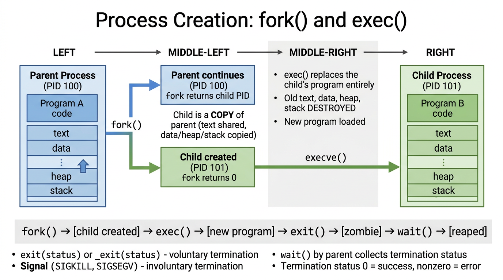
A process has four logical segments: Text (code), Data (static variables), Heap (dynamic allocation), Stack (local variables, call frames).
fork() creates a child that is a copy of the parent (text shared, data/heap/stack copied)exec() to load a new program, replacing all segmentsfork() returns child's PID to parent, returns 0 to childexit(status) or _exit(status) — voluntary terminationwait()echo $?| ID | Purpose |
|---|---|
| Real UID/GID | Who you really are. Inherited from parent. Login shell gets these from /etc/passwd. |
| Effective UID/GID | Used for permission checks. Usually same as real. Changed by set-user-ID programs. |
| Supplementary GIDs | Additional groups the process belongs to. |
| Process | Details |
|---|---|
| init (PID 1) | Parent of all processes. Created by kernel at boot from /sbin/init. Runs as root. Cannot be killed. Adopts orphaned processes. |
| Daemons | Long-lived background processes. No controlling terminal. Examples: sshd, httpd, syslogd, cron. |
Each process has soft and hard limits on resources (open files, memory, CPU time). Set with setrlimit() system call or ulimit shell command. Inherited by child processes via fork().
# List processes $ ps aux # All processes, detailed $ ps -ef # All processes, full format $ ps -p 1 -o pid,ppid,comm # Specific process $ pstree -p # Process tree with PIDs $ top # Interactive process monitor $ htop # Better interactive monitor # Process details $ echo $$ # Current PID $ echo $PPID # Parent PID $ echo $? # Last command's exit status $ cat /proc/$$/status # Full process status # Resource limits $ ulimit -a # Show all limits $ ulimit -n # Max open files $ ulimit -s # Stack size (KB) $ ulimit -u # Max user processes # Daemons $ systemctl list-units --type=service # List all services $ systemctl status sshd # Check specific daemon
The mmap() system call creates a new memory mapping in a process's virtual address space. There are two types: file mappings (backed by a file on disk) and anonymous mappings (no backing file, pages zeroed).
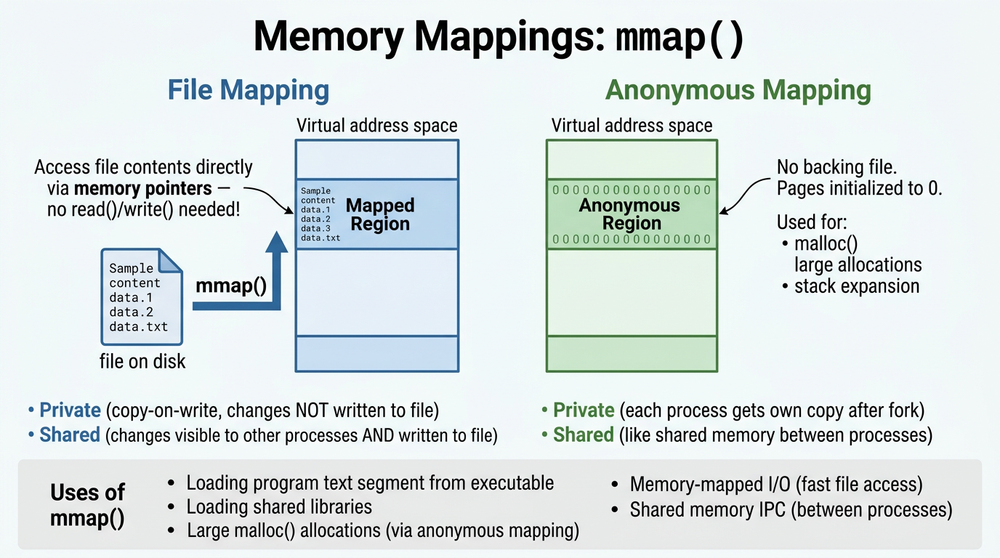
# View memory mappings of a process $ cat /proc/$$/maps # Memory map of current shell 55d3a000-55d3c000 r--p /usr/bin/zsh # text (read-only, private) 55d3c000-55d60000 r-xp /usr/bin/zsh # text (executable) 7f8a2000-7f8a4000 rw-p [heap] # heap 7ffc1000-7ffc3000 rw-p [stack] # stack $ pmap $$ # Prettier memory map $ cat /proc/$$/smaps | head -30 # Detailed memory stats per mapping
Object libraries bundle compiled code for reuse. Static libraries (.a) are copied into executables at link time. Shared libraries (.so) are loaded at run time by the dynamic linker, saving disk and memory.
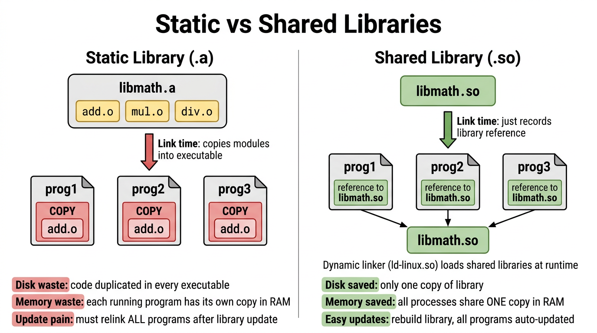
# Show shared library dependencies $ ldd /usr/bin/ls # What shared libs does ls need? linux-vdso.so.1 libselinux.so.1 => /lib/x86_64-linux-gnu/libselinux.so.1 libc.so.6 => /lib/x86_64-linux-gnu/libc.so.6 /lib64/ld-linux-x86-64.so.2 # ← The dynamic linker itself # Find a library file $ ldconfig -p | grep libssl # Search library cache # Static library tools $ ar t /usr/lib/libc.a # List objects in static library $ nm /usr/lib/libm.a | head # Symbols in static library # Check if binary is statically or dynamically linked $ file /usr/bin/ls ELF 64-bit LSB pie executable, dynamically linked # Trace library loading at runtime $ LD_DEBUG=libs ls 2>&1 | head # Debug dynamic linker
Cooperating processes need ways to communicate and synchronize. Linux provides a rich set of IPC mechanisms, some from System V, others from BSD.
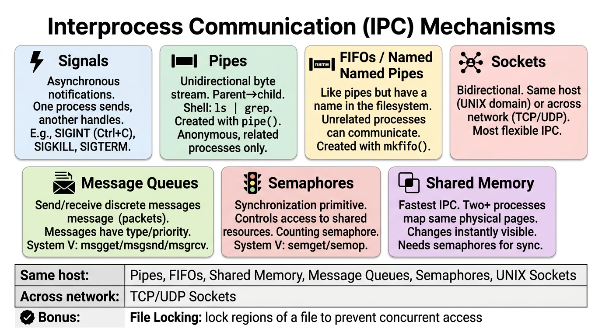
# Pipes in action (shell) $ ls -l | sort -k5n | head # Pipeline of 3 processes $ mkfifo /tmp/myfifo # Create a named pipe (FIFO) # System V IPC status $ ipcs # Show all IPC resources $ ipcs -m # Shared memory segments $ ipcs -q # Message queues $ ipcs -s # Semaphore sets $ ipcrm -m <shmid> # Remove shared memory segment # Sockets $ ss -tuln # Show listening TCP/UDP sockets $ ss -xln # Show UNIX domain sockets $ netstat -tlnp # Alternative (older) # File locks $ lslocks # Show active file locks
Signals are software interrupts that notify a process of an event. They can be sent by the kernel, another process, or the process itself. A process can ignore a signal, be killed by it, be suspended, or handle it with a custom function.
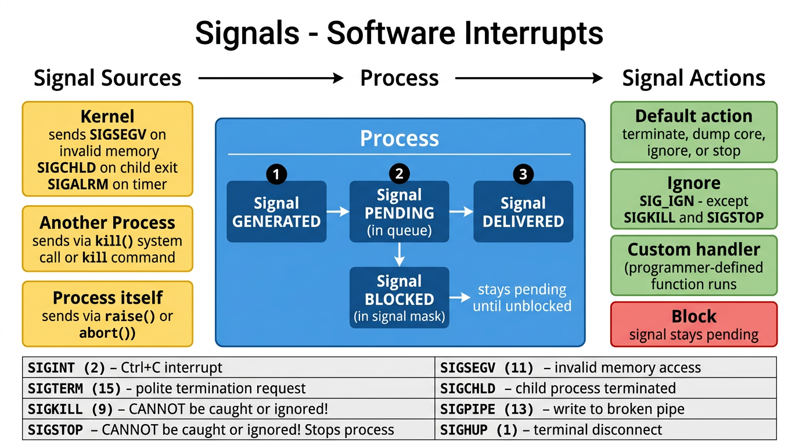
# List all signals $ kill -l 1) SIGHUP 2) SIGINT 3) SIGQUIT 4) SIGILL 5) SIGTRAP 6) SIGABRT 9) SIGKILL 10) SIGUSR1 11) SIGSEGV 13) SIGPIPE 14) SIGALRM 15) SIGTERM 17) SIGCHLD 18) SIGCONT 19) SIGSTOP 20) SIGTSTP 28) SIGWINCH # Send signals $ kill -SIGTERM 1234 # Polite termination request $ kill -9 1234 # Force kill (SIGKILL) $ kill -STOP 1234 # Suspend process $ kill -CONT 1234 # Resume suspended process $ killall nginx # Kill all processes by name $ pkill -f "python script" # Kill by command pattern # Keyboard signals # Ctrl+C → SIGINT (interrupt) # Ctrl+\ → SIGQUIT (quit + core dump) # Ctrl+Z → SIGTSTP (suspend to background) # Check pending/blocked signals $ cat /proc/$$/status | grep -i sig SigPnd: 0000000000000000 SigBlk: 0000000000010000 SigIgn: 0000000000380004 SigCgt: 000000004b817efb
A process can have multiple threads of execution. Threads share the same virtual memory (text, data, heap) and file descriptors, but each has its own stack. They communicate via shared global variables, synchronized with mutexes and condition variables.
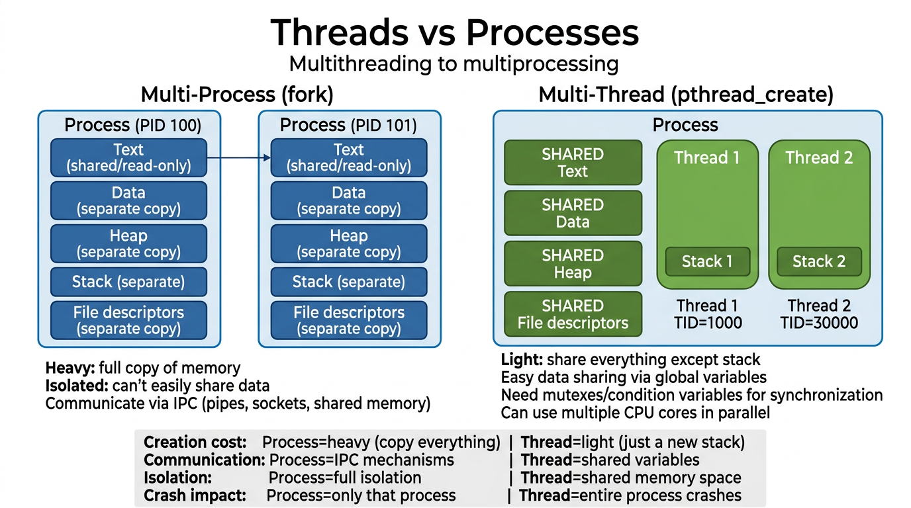
# Show threads of a process $ ps -T -p 1234 # Show threads (SPID column) $ ps -eLf | grep nginx # All threads of nginx # /proc thread info $ ls /proc/1234/task/ # Each thread has a directory here $ cat /proc/1234/status | grep Threads Threads: 4 # top with thread view $ top -H # Show individual threads $ htop # Press H to toggle thread view # Count threads per process $ ps -eo pid,nlwp,comm --sort=-nlwp | head # nlwp = Number of Light Weight Processes (threads)
The shell places each command (or pipeline) in a new process group. All processes in a group share the same process group ID (PGID). Job-control shells let you suspend, resume, and move jobs between foreground and background.
# Start a background job $ sleep 300 & # Run in background [1] 12345 $ jobs # List all jobs [1]+ Running sleep 300 & $ fg %1 # Bring job 1 to foreground # Press Ctrl+Z to suspend it [1]+ Stopped sleep 300 $ bg %1 # Resume in background $ kill %1 # Kill job 1 # View process groups $ ps -o pid,pgid,sid,comm # Show PGID and SID
A session is a collection of process groups. The session leader (usually the login shell) creates the session and establishes the controlling terminal. The foreground process group receives keyboard signals (Ctrl+C, Ctrl+Z).
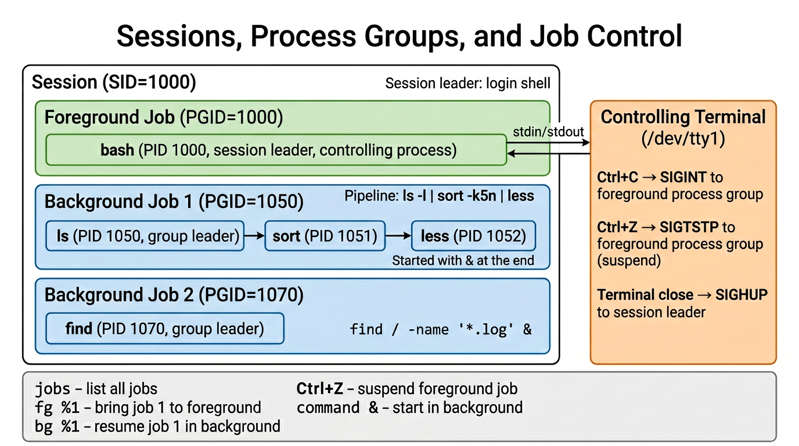
$ ps -o pid,pgid,sid,tty,comm # Show session ID and TTY PID PGID SID TTY COMMAND 1000 1000 1000 pts/0 bash # Session leader 1050 1050 1000 pts/0 vim # Same session, different PGID $ tty # Show controlling terminal /dev/pts/0 $ who # Who is logged in and their terminals
A pseudoterminal (pty) is a pair of virtual devices: a master and a slave. The slave behaves like a real terminal, allowing terminal-oriented programs to run without a physical terminal. Used by terminal emulators (xterm, gnome-terminal), SSH, and screen/tmux.
$ tty # Which pty am I using? /dev/pts/0 # pts = pseudo-terminal slave $ ls /dev/pts/ # List active pseudo-terminals 0 1 2 ptmx $ w # See which users are on which ptys USER TTY FROM WHAT alice pts/0 10.0.0.5 bash bob pts/1 10.0.0.6 vim
Two types of time matter to processes:
Calendar time: seconds since the Epoch (midnight Jan 1, 1970 UTC). Elapsed time: duration from process start.
Total CPU time used. Split into user time (executing user code) and system time (executing kernel code on behalf of the process).
$ date # Current date and time Sun Apr 5 10:45:00 PDT 2026 $ date +%s # Seconds since Epoch 1775590700 $ date -d @0 # The Epoch itself Thu Jan 1 00:00:00 UTC 1970 $ uptime # System uptime and load averages 10:45:00 up 30 days, 5:23, 3 users, load average: 0.15, 0.20, 0.18 # Measure real/user/system time of a command $ time ls -lR /usr > /dev/null real 0m0.543s # Wall clock time user 0m0.120s # CPU time in user mode sys 0m0.380s # CPU time in kernel mode $ cat /proc/uptime # Uptime in seconds
A client sends request messages to a server, which performs the service and sends back responses. They communicate using IPC mechanisms (sockets, pipes, shared memory). They can be on the same host or across a network.
# See what servers are listening $ ss -tuln # TCP/UDP listening sockets State Recv-Q Send-Q Local Address:Port Peer Address:Port LISTEN 0 128 0.0.0.0:22 0.0.0.0:* # sshd LISTEN 0 128 0.0.0.0:80 0.0.0.0:* # httpd LISTEN 0 128 0.0.0.0:443 0.0.0.0:* # https # See active connections $ ss -tun # Established connections $ lsof -i :22 # Who's using port 22? # Test connectivity $ curl -I http://localhost # HTTP request to server $ nc -zv server.com 443 # Test if port is open
Realtime applications must respond within a guaranteed deadline. Examples: assembly lines, ATMs, aircraft navigation. Traditional UNIX is not a realtime OS, but Linux has been moving toward full native realtime support.
POSIX.1b extensions for realtime include: asynchronous I/O, shared memory, memory-mapped files, memory locking, realtime clocks/timers, alternative scheduling policies, realtime signals, message queues, and semaphores.
# Check if kernel has PREEMPT_RT (realtime patch) $ uname -v #101-Ubuntu SMP PREEMPT_DYNAMIC # PREEMPT means some RT support # View scheduling policies $ chrt -m # Show min/max priorities SCHED_OTHER min/max priority : 0/0 SCHED_FIFO min/max priority : 1/99 SCHED_RR min/max priority : 1/99 # Check a process's scheduling policy $ chrt -p 1 # Scheduling policy of PID 1 pid 1's current scheduling policy: SCHED_OTHER pid 1's current scheduling priority: 0 # Run a command with realtime priority $ sudo chrt -f 50 ./my_realtime_app # FIFO policy, priority 50
/proc is a virtual file system that provides an interface to kernel data structures. No actual files on disk — the kernel generates content on-the-fly when you read. Contents are human-readable text, parseable by scripts. Writing to /proc/sys/* changes kernel parameters at runtime.
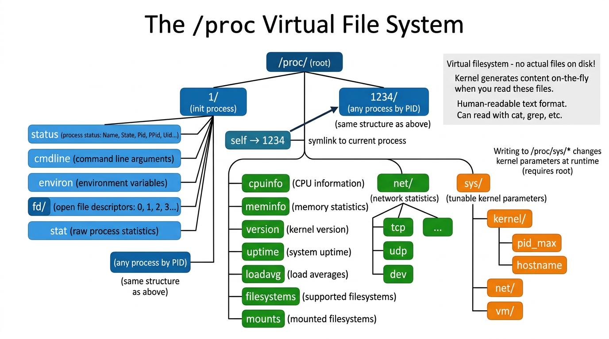
# === System-wide info === $ cat /proc/cpuinfo | head -20 # CPU details $ cat /proc/meminfo | head -10 # Memory stats $ cat /proc/version # Kernel version $ cat /proc/uptime # Seconds since boot $ cat /proc/loadavg # Load averages $ cat /proc/filesystems # Supported filesystems $ cat /proc/mounts # Mounted filesystems $ cat /proc/net/tcp # TCP connections $ cat /proc/interrupts # IRQ counters # === Per-process info (replace $$ with any PID) === $ cat /proc/$$/status # Name, State, PID, PPID, UIDs, memory $ cat /proc/$$/cmdline | tr '\0' ' ' # Command line $ cat /proc/$$/environ | tr '\0' '\n' # Environment vars $ cat /proc/$$/maps # Memory mappings $ ls -la /proc/$$/fd/ # Open file descriptors $ cat /proc/$$/limits # Resource limits $ cat /proc/$$/io # I/O statistics $ cat /proc/$$/stat # Raw process stats $ ls /proc/$$/task/ # Thread IDs $ readlink /proc/$$/cwd # Current working directory $ readlink /proc/$$/exe # Executable path # === Tunables (read/write) === $ cat /proc/sys/kernel/pid_max # Max PID $ cat /proc/sys/kernel/hostname # Hostname $ cat /proc/sys/vm/swappiness # Swap tendency (0-100) $ cat /proc/sys/net/ipv4/ip_forward # IP forwarding $ echo 1 | sudo tee /proc/sys/net/ipv4/ip_forward # Enable forwarding
| Concept | Key Takeaway |
|---|---|
| Kernel | Central software managing CPU, RAM, devices. Lives at /boot/vmlinuz. Provides process scheduling, memory management, filesystem, device access, networking, and system call API. |
| User/Kernel Mode | CPU operates in two modes. User mode: restricted access. Kernel mode: full access. Transitions via system calls, interrupts, exceptions. |
| Shell | User-space command interpreter. Major shells: sh, csh, ksh, bash, zsh. Used interactively and for scripts. |
| Users & Groups | Each user has UID, each group has GID. Root (UID 0) is superuser. Linux capabilities provide fine-grained privileges. |
| Filesystem | Single hierarchy rooted at /. File types: regular, directory, symlink, device, pipe, socket. Permissions: rwx for user/group/other. |
| File I/O | Universal I/O: same syscalls for all file types. File descriptors: 0=stdin, 1=stdout, 2=stderr. stdio library layered on top. |
| Programs | Source code compiled to binary. Filters read stdin, transform, write stdout. Pipelines chain filters. |
| Processes | Running program instance. Created with fork()+exec(). Has PID, PPID, credentials (UIDs/GIDs). init (PID 1) is ancestor of all. |
| Memory Mappings | mmap() maps files or anonymous memory into process address space. Private or shared. Used for loading programs, large mallocs, IPC. |
| Libraries | Static (.a): copied into executable. Shared (.so): loaded at runtime, shared in memory. Dynamic linker resolves at runtime. |
| IPC | 7 mechanisms: signals, pipes, FIFOs, sockets, message queues, semaphores, shared memory. Sockets work across network. |
| Signals | Software interrupts. Generated by kernel/process/self. Actions: default, ignore, handler, block. SIGKILL/SIGSTOP cannot be caught. |
| Threads | Share memory within a process. Own stack only. Lighter than processes. Need mutexes for synchronization. |
| Sessions & Jobs | Session = collection of process groups. Foreground job gets terminal. Ctrl+C/Z send signals to foreground group. |
| Pseudoterminals | Master-slave virtual device pair. Slave acts like a terminal. Used by terminal emulators, SSH, screen/tmux. |
| Time | Real time (wall clock, Epoch-based) vs CPU time (user + system). Measured with time command. |
| Client-Server | Client sends requests, server responds. Can be on same or different hosts. Communicate via IPC/sockets. |
| Realtime | Guaranteed response deadlines. POSIX.1b extensions. Linux PREEMPT_RT patch for hard realtime. |
| /proc | Virtual filesystem exposing kernel data. Per-process info at /proc/PID/. System tunables at /proc/sys/. Human-readable text. |
# ═══════════════ SYSTEM INFO ═══════════════ $ uname -a # Kernel & system info $ cat /etc/os-release # Distribution info $ uptime # Uptime & load averages $ dmesg | tail # Kernel messages $ journalctl -xe # System logs # ═══════════════ PROCESSES ═══════════════ $ ps aux --sort=-%mem | head # Top memory consumers $ ps aux --sort=-%cpu | head # Top CPU consumers $ top / htop # Interactive process monitor $ pstree -p # Process tree $ strace -p PID # Trace system calls of running process $ ltrace -p PID # Trace library calls # ═══════════════ MEMORY ═══════════════ $ free -h # RAM and swap usage $ cat /proc/meminfo # Detailed memory stats $ vmstat 1 5 # Virtual memory stats every 1s $ pmap PID # Memory map of a process $ slabtop # Kernel slab cache usage # ═══════════════ DISK & FILESYSTEM ═══════════════ $ df -h # Filesystem disk space $ du -sh /var/* # Directory sizes $ iostat -x 1 # Disk I/O stats $ iotop # I/O usage per process $ lsblk # Block device layout $ mount | column -t # Mounted filesystems # ═══════════════ NETWORK ═══════════════ $ ss -tuln # Listening sockets $ ss -tun # Established connections $ ip addr show # Network interfaces $ ip route # Routing table $ netstat -s # Network statistics $ tcpdump -i eth0 # Packet capture # ═══════════════ USERS & SECURITY ═══════════════ $ w # Who is logged in $ last # Login history $ id # Current user/group info $ getfacl file # Access control lists $ getcap /usr/bin/* # File capabilities # ═══════════════ SIGNALS & IPC ═══════════════ $ kill -l # List all signals $ ipcs # System V IPC status $ lslocks # Active file locks # ═══════════════ /proc DEEP DIVE ═══════════════ $ cat /proc/PID/status # Process overview $ cat /proc/PID/maps # Memory map $ ls -la /proc/PID/fd/ # Open files $ cat /proc/PID/io # I/O counters $ cat /proc/PID/limits # Resource limits $ sysctl -a # All kernel parameters